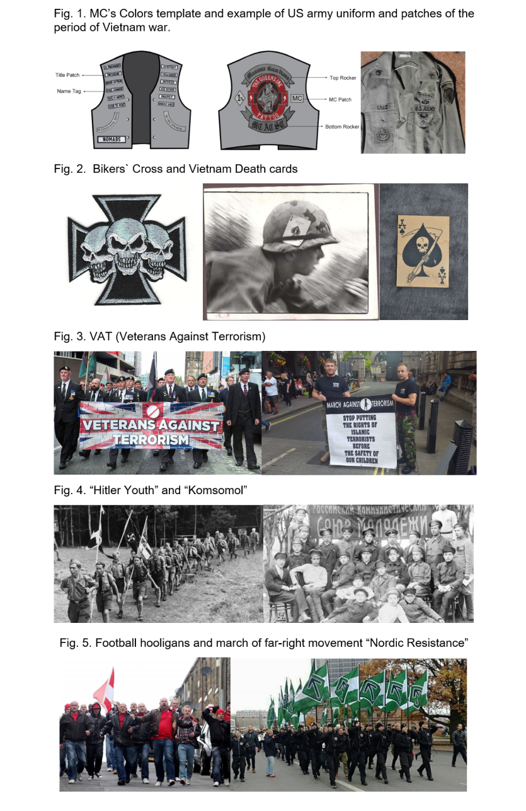

History is an order ow wars, disasters and revolutions (Sedakova,2017) And it is clear that wars has a great impact on the process of how our world develops. It influences on all the sides of human lives, and visual side is not an exception. (Brady, 2014) In this essay I want to raise the question of usage of militant aesthetics by non-commercial civil organisations and communities in their identity.
At first it worth to pay attention on what the “Identity” means itself. In terms of sociology, Identity – is the term describing the set of fundamental qualities, beliefs, looks and expressions that underlie the human person or group of people. (James, 2020) But if we are talking about identity in design, most of likely the brand identity or corporate identity is meant. In other words: in terms of design there is set of visual means through which an organization can be recognized (Templafy, 2020) But in fact the design cant be separated from the ideas which lay behind it and both social and visual sides of identity are Interconnected. So why and how the fundamental qualities and beliefs of some group of people in civil life and visual means this group uses to represent itself can be connected to the military?
One of the most obvious reasons is that history of the community or movement in which it exists could came from military. The founders or members could have their personal military background and they can bring it to the community or collective they establish or join, it could be reflected in traditions, rules and aesthetics as well.
The example of the community with militant aesthetic could be easily found in most of the outlaw motorcycle clubs (It is important to notice that outlaw motorcycle clubs are not necessary connected to the criminal activity. In fact term “Outlaw” is more about independence and freedom, as an example in USA and Canada it is used for the clubs which are not registered in National Motorcycle Organisations, And when it comes to the clubs involved in criminal activities the term “outlaw motorcycle gang” is officially used). In fact, A lot of aspects of a motorcycle club`s culture is rooted to the military field. The military background could be found in history, structure, rules, hierarchy and visual symbols.
Factually, such thing as “motorcycle club” or “motorcycle community” appeared at the beginning of 20th century. (Bikedomain, 2015) But popularity began to gain only after WW2, because of the ex-soldiers served in supply troops and used motorcycles during the period of war. And the time of The American-Vietnam Conflict era (1958-1975) can be seen as period during which most of the outlaw motorcycle clubs were formed. In fact, people who established the biggest and the most famous motorcycle clubs, were ex-soldiers, they formed clubs and use their military skills knowledge to organize it. (Dulaney, 2006) According to the American government informant Charles Falco, who had infiltrated several very famous biker groups during his informants’ career, motorcycle clubs have a structure like the military and a very strict set of rules and regulations. (Falco & Droban, 2013)
And as well when it comes to the visual side, Motorcycle clubs also borrowed some significant elements from the military field. It worth to pay attention to the Motorcycle clubs colors (the insignia, or "patches", worn by motorcycle club members on their vests, and identify the club, territorial location, place, the club hierarchy, and sometimes other significant moments connected to the clubs member. And as well there is a name for vest itself) (Ferrell, Hayward and Young, 2013) The term “colors” itself is a reference to the military colors(or standards in other words).The same as with national flags and standards club members treat their vests with very high respect, and it is almost always stated in the rules of the club that member has to protect the “honour of his colors” and it is forbidden to let someone else wear or even touch members colors. (Rollin, Pineo and Mommer, 2012). The palette used in motorcycle club colors has a certain meaning as it is with national flags and symbols. And it is clear, that stylistic and place of patches on the front side of the vests came from the very similar ones used on the military uniform (Fig.1) to display name, rank or blood type of the soldier. (Dulaney, 2006)
There are some symbols displayed on vests, motorcycles and some attributes which also came from the military and become popular in bikers’ culture in general. First one for example is WWII Nazi military emblem “Nazi cross” or “Iron cross” which could have different meanings firstly it might be worn by former soldiers after WWII as a trophy. And later it turned to the symbol of rebellion displayed on the vests, motorcycles or different biker`s accessories, and it was simply used to shock the society. Now days in motorcycling culture it is still very recognizable and popular symbol and is known as “bikers cross” (Fig.2). (Kevin, 2018) Another symbol is Vietnam conflict death card (Fig.2), card looks like simple ace of spades playing card from the front and contain military unit symbols on the back side. Units left these cards as a message to the Vietcong, telling them who was responsible for the death and destruction left behind. As well these cards were worn on helmets as “anti- peace” symbol. Originally idea came from Vietnamese traditions which is meant the spade as a death symbol. (Marquez, 2020) As well as Biker`s cross The Ace of spades symbol is still popular in bikers’ culture.
Talking about the influence of war on human identity, it is important to remember that experience that people lived through taking part in combat actions has a huge influence on their psychological state, this experience can radically change their minds and worldviews. Some of the veterans suffering from PTSD can’t handle with returning to normal life. And despite of all the bed sides of war, army could give a sense of belonging and brotherhood, and Soldiers who had returned from battle try to find the solidarity they had in military service in the communities connected with completely different activities. (Dulaney, 2006) And sometimes this idea to unite with their brothers in arms or join the existed community can turn into something really large and significant.
“DeliverFund” can be a first example, it is a non-profit organisation aimed to fight with human trafficking. The founders have a military background and a lot of careers with experience in special operations working with this organisation. DeliverFund work together with police, their instructors provide human traffic trainings aimed to help government to fight with this problem more effective. (Rivard, 2018) The design decisions and visual language used I on DeliverFund website and in social media is very close to ones used in US Army web resources.
Another example of organisations established by former military members is the Veterans Against Terrorism (VAT) (Fig.3), there is a group of British Military Veterans whose activity aimed against "Islamist extremists. VAT was formed after the bombing Manchester Arena by a group of British veterans, now days there is a huge movement of about 9 thousand members. In their actions and promotion materials VAT using symbols of British army and quite clear militant style. (Hill, 2018)
As well it worth to be noticed military service obviously gives people several specific skills such as fighting, using weapon, knowledge in war strategy etc. and these skills are always in demand and can be applicable in very different fields. But at the same time ex-soldiers not always is possible to find a job. Even though charity organisations are created around the world to help veterans the problem of unemployment among former military still exist even in the countries where the state pays attention to helping veterans. The combination of unemployment, and mental-health problems caused by combat actions, can be the perfect set for sending veterans to the criminal field. For example, according to official statistics around 2% of people in us army forces involved in criminal activities. (Wolfe, 2013) Military trained gang members exist and are in demand for very long period. Nowadays members with military skills can be find in the street gangs, outlaw moto gangs, domestic terrorists and extremists. (Smith, 2017)
The second moment which can be observed within the subject of using military aesthetics is about cases when militant aesthetics used within groups, communities and movements intentionally, for the sake of certain goals and ideas. Usage of rules like ones existing in the military, occurs in very different scales starting from small organisations and ending with huge movements supporting by the state. It may be based on several different reasons, depending on the case, but the most obviously militarism is justified by patriotic ideas, self and national defence. In all cases using ideas, structures and visual aesthetics coming from military field can help with control and discipline inside the group and as well can be used to arouse respect and fear from the side of society.
Firstly, it worth to stop on the term “Militarism”. In the key of the state politics it is “the belief or the desire that a state should maintain a strong military capability and for national interests and values, belief that military power play the main role in increasing national strength. (School History, 2016)
The idea of militarism is not new, people ruling the state use it throughout whole the history of mankind justifying it with the national interests. There are a lot of examples how states involve people in near-military organisations and activities from the early years. The history has enough bright examples. If we look at the period of WWII, we can find a some very good examples. The social structures of Nazi Germany and the Soviet Union in fact had a lot of similarities. Despite of difference in ideological theories which laid behind Communism and Nazism, the methods to implement those ideological ideas were identical. (O'Neill, 2017) And in the key of the raised topic it will be fair to examine how two regimes created the organisations which were not a part of the state military forces, but exited to prepare and educate young people in the patriotic key and raise the future soldiers.
In Nazi Germany during the period of WWII it become compulsory for children to join the “Hitler Jugend” (official Nazi-German youth movement) (Fig.4). (Matchan, 1985) The were several formations depending on age and gender for example Jungmadelbund (League of Young Girls) the Bund Deutscher Madel (League of German Girls), but it is clear that all the young people were involved in military based organisations activities, with rules hierarchy, special uniform and traditions similar to ones existing in the army. (O'Neill, 2017)
The very similar thing existed in Soviet Union - the Komsomol (Fig.4), (All-Union Leninist Young Communist League) and Pioneer (All-Union Lenin Pioneer Organization) for younger children was the youth organizations of the Communist Party. (Vasilver, 2012) In both cases the aim was to educate children in the key of patriotism, sports and primary military training as well as loyalty to the existing regime. Comparing the handbooks of the Komsomol and the Hitler Jugend it becomes clear that the main role is identical to place education of children under control and raise them in the key of dictatorship country benefits. (Gould, 1951)
Unfortunately the examples of such organisations still exists in the modern world, The Kimilsungist-Kimjongilist Youth League in North Korea and Young Communist League in China and the “Yunarmia”( Young Army) in Russia. (Stewart, 2016)
But the idea of usage the military experience of control discipline and enforce rules of course is not abused only by the state. A lot of movements or unities which have an intention to show themselves strong and combat-ready because of the specification of their activity or ideology. It is almost always applicable for organisations connected to destructive and aggressive actions like football hooligans, far-right skinheads etc. (Botsch, 2012) The strict rules, visual unity, usage of same style in clothes or even something close to the uniform, and as well actions with marching, are the good examples of using military experience and aesthetics.
To sum up, ideas and experience which came from military system often contains such terms like strength, power, unity, brotherhood, loyalty, sense confidence, and belonging to something huge. And visuals which come from the same area could be perceived by the society as symbols of all this. And the fact how we precept the militant aesthetics can be used for completely different things. In two words militant aesthetics is a weapon that give people a sense of strength and security, and as every weapon it can serve for defence or for destructions, depending in whose hands it is.
Illustrations:
Bibliography:
BIKEDOMAIN. (2015). History of Motorcycle Clubs. [online] Available at: https://www.bikedomain.com.au/publications/News/31/history-of-motorcycle-clubs.html [Accessed 5 Jan. 2020].
BOTSCH, G. (2012). From Skinhead-Subculture to Radical Right Movement: The Development of a ‘National Opposition’ in East Germany. Contemporary European History, 21(4), pp.553-573.
BRADY, J. (2014). Reducing the Impact of War on Civilians. [online] University Observer. Available at: https://universityobserver.ie/reducing-the-impact-of-war-on-civilians/ [Accessed 6 Jan. 2020].
DULANEY, W. (2006). Over the Edge and into the Abyss: The Communication of Organizational Identity in an Outlaw Motorcycle Club. Ph.D. Florida State University.
FALCO, C. & DROBAN, K. (2013). Vagos, Mongols & outlaws: my infiltration of America's deadliest biker games. New York: Thomas Dunne Books.
FERRELL, J., HAYWARD, K. & YOUNG, J. (2013). Cultural criminology. Los Angeles: SAGE.
GOULD, J. (1951). The Komsomol and the Hitler Jugend. The British Journal of Sociology, 2. https://www.dailymail.co.uk/news/article-3616170/Putin-s-youth-army-Russian-strongman-sets-Soviet-style-pioneer-scheme-schoolchildren-faces-web-claim-s-echo-HITLER.html [Accessed 5 Jan. 2020].
HILL, L. (2018). Anti-terror march route revealed as charities speak out. [online] Chroniclelive. Available at: https://www.chroniclelive.co.uk/news/north-east-news/veterans-against-terrorism-march-newcastle-14296775 [Accessed 5 Jan. 2020].
JAMES, P. (2014). Despite the Terrors of Typologies The Importance of Understanding Categories of Difference an. Published online: 13 Dec 2014.
KEVIN, Y. (2018). Why Is The Iron Cross A Popular Decoration On Biker Wallets. [online] Medium. Available at: https://medium.com/@istyleaddict/why-is-the-iron-cross-a-popular-decoration-on-biker-wallets-c2c810df8c84 [Accessed 5 Jan. 2020].
MARQUEZ, J. (2019) Death Cards of The Vietnam War. [Online Video]. November 19th. Available from: https://www.youtube.com/watch?v=SxO-BM3wjE8. [Accessed: 5 Jan 2020].
MATCHAN, L. (1985). Chicago Tribune - We are currently unavailable in your region. [online] Chicagotribune.com. Available at: https://www.chicagotribune.com/news/ct-xpm-1985-06-05-8502050352-story.html [Accessed 5 Jan. 2020].
O'NEILL, M. (2017). The Indoctrinated Children Of The Soviet Pioneers & Komsomol. [online] Mark O'Neill. Available at: https://www.markoneill.org/children-soviet-pioneers-komsomol/ [Accessed 6 Jan. 2020].
RIVARD, H. (2018). DeliverFund and the Fight to End Human Trafficking. [online] DeliverFund.org. Available at: https://www.deliverfund.org/new-about-us/ [Accessed 5 Jan. 2020].
ROLLIN, B., PINEO, C. AND MOMMER, K. (2012). Harley-Davidson and Philosophy. New York: Open Court.
SCHOOL HISTORY. (2016). Militarism as a cause of World War I | Facts, Information & Outcome. [online] Available at: https://schoolhistory.co.uk/notes/militarism-as-a-cause-of-world-war-i/ [Accessed 5 Jan. 2020].
SMITH, C. (2017). Gangs and the military. Lanham: Rowman & Littlefield Publishers.
STEWART, W. (2016). Putin's youth army: Russian leader sets up schoolchild pioneer scheme. [online] Mail Online. Available at:
TEMPLAFY. (2012). Corporate identity management - Brand compliance software. [online] Available at: https://www.templafy.com/corporate-identity-management/ [Accessed 5 Jan. 2020].
VASILVER, S. (2012). The Komsomol | Guided History. [online] Blogs.bu.edu. Available at: http://blogs.bu.edu/guidedhistory/russia-and-its-empires/sigalit-vasilver/ [Accessed 5 Jan. 2020].
WOLFE, M. (2013). From PTSD to Prison: Why Veterans Become Criminals. [online] The Daily Beast. Available at: https://www.thedailybeast.com/from-ptsd-to-prison-why-veterans-become-criminals [Accessed 5 Jan. 2020].